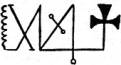

Ortaçağ Graal kahramanını, Kutsal Roma İmparatorluğu’nun başının ‘Dünya Kralı’nın bir imgesine, bir görünümüne dönüşmesini bekliyordu… Görünmez İmparator, aynı zamanda görünür İmparator olacak, Ortaçağ aynı zamanda Merkezçağ anlamını da taşıyacaktı… Görünmez, içine girilmez merkez, yeniden uyanması gereke hükümdar, hem öç alan, hem yeniden kuran kahraman. Bunlar, az çok romantik bir ölü geçmişin düşleri değil, bugün haklı olarak kendilerine canlı diyebilenlerin gerçeğidir yalnızca.
(Julius Evola, Il mistero del Graal, Roma, Edizioni Mediterranee, 1983, 23. Böl. Ve Sonsöz)
“İşin içine Graal da mı giriyor, diyorsunuz?” diye sordu Belbo.
“Kuşkusuz. Hem bunu yalnız ben söylemiyorum. Graal söylencesinin ne olduğunu uzun uzun anlatmama gerek yok, sanırım; sizler kültürlü insanlarsınız. Yuvarlak Masa Şövalyeleri, İsa’nın kanını taşıyan, Giuseppe d’Arimatea tarafından Fransaya getirilen (kimilerine göre, İsa’nın kanını taşıyan) kupa. Kimilerine göre de, gizemli güçler içeren bir taş olan bu mucize nesnenin gizemsel aranışı. Çoğu kez Graal göz kamaştırıcı bir ışık gibi görünür… Bir güç, sınırsız bir dirim kaynağının simgesidir. Besler, yaraları iyileştirir, kör eder, yıldırım gibi çarpar… Bir lazer ışını mı? Kimileri, simyacıların Felsefe Taşı gibi düşünmüşlerdi onu, ama böyle de olsa, Felsefe Taşı, kozmik bir dirimin simgesinden başka neydi ki? Bu konuda yazılanların sonu yok, ama tartışılmaz bazı belirtiler kolayca ayırdedilebilir. Wolfram von Eschenbach’ın Parzival’ini okursanız, Graal’in bir Tapınakçı kalesinde güvence altına alındığını görürsünüz! Eschenbach bir erginleşmiş miydi? Gizlemesi gereken bir şeyi açığa vuran düşüncesiz biri miydi? Dahası var. Tapınakçılar’ca korunun bu Graal, gökten düşmüş bir taş olarak betimlenmektedir: lapis exillis. Gökten düşmüş bir taş mı (‘ex coelis’), yoksa sürgünden gelen bir taş anlamına mı geldiği bilinmiyor. Ne olursa olsun, uzaklardan gelen bir taş. Kimileri, onun bir göktaşı olabileceğini bile öne sürdüler. Bizim açımızdan, bir Taş olduğu kesin. Graal, her ne olursa olsun, Tapınakçılar için amacı, ya da planın sonunu simgeler.”
“Özür dilerim,” dedim, “belgeden çıkan anlama göre, şövalyeler altınca buluşmada bir taşın yanında ya da üstünde bulunacaklar, bir taş bulmayacaklar.”
“İnce bir çift-anlamlılık daha, bir başka aydınlatıcı gizemsel andırış! Kuşkusuz buluşma bir taşın üstünde olacak; nerede olduğunu az sonra göreceğiz, ama o taşın üstünde planın iletilmesiyle altı mührün açılması tamamlandığında, Şövalyeler Taş’ı nerede bulacaklarına öğrenecekler! Yeni Ahit’teki sözcük oyunu gibi. Sen Petrus’sun; bu taşın üstündesin... taşın üstünde Taş’ı bulacaksınız.”
“Bütün bunlar çok açık,” dedi Belbo, “devam edin, lütfen. Casaubon, durmadan söz kesmeyin. Sonunu merak ediyoruz.”
“İşte, böyle,” dedi Albay. “Graal’e açıkça gönderme yapılması, hazinenin uçsuz bucaksız, belki de başka gezegenlerden düşmüş radyoaktif bir madde deposu olduğunu düşündürdü bana, uzun uzun. Kral Amfortas söylencesindeki gizemli yarayı düşünün, örneğin... Gereğinden fazla ışına maruz kalmış bir röntgen uzmanı gibi... Gerçekten de ona dokunulmaması gerekir. Niçin? Tapınakçılar’ın Ölü Deniz’in kıyılarına vardıklarında duydukları heyecanı düşünün. Bilirsiniz, o ağır, ziftti suların üstünde mantar gibi yüzer insan. Üstelik ondurucu özelliği de var... Filistin’de, bir radyum ya da uranyum yatağı bulmuş olabilirler; hemen işletecek durumda olmadıkları bir maden yatağı. Graal ile Tapınakçılar ve Katarlar arasındaki ilişkiler, yiğit bir Alman subayı tarafından bilimsel olarak incelenmiştir. Yaşamını, Graal’in Avrupalı ve Arî niteliği üstünde titizlikle derin derin düşünmeye adamış bir SS Obersturmbann-führer’inden, Otto Rahn’dan söz ediyorum -1939’da yaşamını nasıl, niçin yitirdiği üstünde durmuyorum- ama bazılarının öne sürdüklerine göre... neyse. İngolf’ün başına geleni unutabilir miyim?.. Argonotlar’in Altın Postu ile Graal arasındaki bağları gösteriyor bize... Kısacası, söylencedeki gizemsel Graal’le Felsefe Taşı (Iapis!) ve Hitler’e bağlı olanların, savaşın eşiğinden son soluklarına dek ulaşmaya çalıştıkları o sınırsız güç kaynağı arasında bir bağ olduğu kesin. Söylencenin bir değişkesine göre, Argonotlar, Işık Ağacı’nın bulunduğu Dünya Dağı’nın üstünde süzülen bir kupa (dikkat edin, kupa diyorum) görüyorlar. Argonotlar Altın Post’u buluyorlar. Gemileri, büyüyle, kuzey yarım küresinde Samanyolu’na getiriliyor; orada Haç, Üçgen ve Sunak’la birlikte sonsuz Tanrı’nın ışıklı niteliğini açığa vuruyor. Üçgen, kutsal Üçleme’yi, haç, kutsal sevgi Özveri’sini simgeliyor; sunak da, Diriliş Kupası’nın üstünde durduğu, Son Yemek Masası’dır. Bütün bu simgelerin Keltik ve Arî kökenleri açık.”
Albay, Obersturmunddrang mıdır, ne Allanın belasıysa, onu yüce özveriye itmiş olan yiğitçe coşkuya kapılmış görünüyordu. Onu gerçeğe döndürmek gerekiyordu.
“Sonuç?” diye sordum.
“Kendi gözlerinizle görmüyor musunuz, Bay Casaubon? Graal’den Şeytan Taşı gibi söz edildi; bu da Bafomet’in imgesine yaklaştırıyor onu. Graal, bir dirim kaynağıdır. Tapınakçılar, dirimsel bir gizin bekçileriydiler; planlarını da buna göre tasarladılar. Bilinmeyen merkezler nerede kurulmuş olmalıdır? İşte, burada, beyler.” Albay, suçortagı gibi, birlikte bir düzen kuruyormuşuz gibi baktı bize, “Elimde bir ipucu vardı, yanlış ama yararlı bir ipucu. Bir gize kulak misafiri olması gereken bir yazar, Charles-Louis Cadet-Gassicourt (rastlantıya dikkat ediniz; yapıtı Ingolf’un küçük kitaplığında duruyordu), 17.97’de bir kitap yazıyor: Le tombeau de Jacques Molay on le secret des conspirateurs â ceux qui veulent tout savoir. Molay’ın, ölmeden önce dört gizli loca kurduğunu öne sürüyor: Paris’te, İskoçya’da, Stockholm’de, bir de Napoli’de. Bu dört loca bütün hükümdarları ortadan kaldıracak, Papa’nın erkini yok edecekti. Gassicourt garip bir adamdı, doğru, ama Tapınakçılar’ın gizli merkezlerini nerede kurabileceklerini saptamak için onun düşüncesinden yola çıktım. Yol gösterici bir fikrim olmasaydı, mesajın bilmecelerini anlayamazdım, doğal bu. Ama böyle bir fikrim vardı. Sayısız kanıtlara dayanarak, Tapınakçı ruhunun Keltik, Druidik kökenli olduğuna inanıyordum; geleneğin gerçek uzak-kuzey uygarlığının beşiği olan Avalon Adası’yla özdeşleştirdiği Arîlik ruhu olduğuna. Çeşitli yazarların, Avalon’u, Hesperides bahçesiyle, Ultima Thule’yle ya da Altın Post’un bulunduğu Colchis’le özdeşleştirdiklerini bilirsiniz. Altın Post’un, tarihin en büyük şövalye tarikatı olması bir rastlantı değildir. Bu da, mesajdaki ‘kale’ sözcüğünün gerçekte ne anlama geldiğini açıkça gösteriyor. Tapınakçılar’ın Graal’i sakladıkları uzak-kuzeydeki kale; olasılıkla, söylencedeki Monsalvato Kalesi.”
Sözlerine ara verdi. Ağzının içine baktırmak istiyordu bizi. Biz de bakıyorduk.
“Gelelim ikinci buyruğa; mührün bekçileri, ekmek yiyen kişinin ya da kişilerin bulunduğu yere gideceklerdir. Apaçık bu: Graal, içinde İsa’nın kanı bulunan kupadır; ekmek de İsa’nın eti, ekmeğin yendiği yer, Kudüs’te, Son Yemek’in yendiği yerdir. Tapınakçılar’ın, Kudüs’ün Müslümanlarca yeniden ele geçirilmesinden sonra da, orada gizli bir üs bulundurmayı sürdürmemiş olabilecekleri düşünülemez. Açıkça söylemek gerekirse, Arî söylencesinden böylesine derinden etkilenmiş bir planda, bu Yahudi öğenin varlığı tedirgin ediyordu beni. Sonra, bir kez daha düşündüm; Yahudi dininden gelmiş saymayı sürdüren biziz; çünkü Roma Kilisesi böyle söylüyor. Tapınakçılar, isa’nın bir Kelt söylemi olduğunu iyi biliyorlardı. İncil’de tüm anlatılanlar Hermetik bir alegoridir; toprağın altında çürüdükten sonra yeniden diriliş vb. İsa, simyacıların İksir’inden başka bir şey değildir. Öte yandan, üçlemenin bir Ari kavramı olduğunu herkes bilir. Ermiş Bernard gibi bir Druid tarafından yazdırılan Tapınakçı Yasasında, üç sayısının ağır basmasının nedeni budur.”
Albay bir yudum su içti. Sesi kısılmıştı. “Şimdi de üçüncü aşamaya gelelim, Sığınak’a. Tibet’tir burası.”
“Neden Tibet?”
“Çünkü, her şeyden önce, von Eschenbach, Tapınakçılar’in Avrupa’dan ayrıldıklarını, Graal’i Hindistan’a götürdüklerini anlatıyor. Arı soyunun beşiğine. Sığınak Agarttha’dadır. Agarttha’dan söz edildiğini işitmişsinizdir; dünyanın kralının oturduğu yer, Dünya’nın Efendilerinin, insanlık tarihinin olaylarına egemen oldukları, onları yönettikleri yeraltı kenti. Tapınakçılar gizli merkezlerinden birini orada, tinselliklerinin kaynağında kurmuşlardı. Agarttha Krallığı ile Sinarchia arasındaki bağları biliyorsunuzdur...”
“Doğrusu hayır...”
“Bilmemeniz daha iyi; öldürücü gizler vardır. Ama biz konumuzdan ayrılmayalım.
Agarttha’nın, altı bin yıl önce, hâlâ içinde yaşamakta olduğumuz Kali-Yuga çağının başında kurulmuş olduğunu herkes bilir. Şövalye tarikatlarının görevi, bu gizli merkezle ilişkiyi, Doğu bilgeliği ile Batı bilgeliği arasındaki etkin bağı sürdürmek olmuştur her zaman. Dördüncü buluşmanın nerede olması gerektiği, bundan açıkça anlaşılıyor. Druidler için kutsal olan bir başka yerde, Bâkire’nin kentinde, yani Chartres Katedrali’nde. Chartres, Provins’e oranla, Ile-de-France’ın başlıca nehrinin, Sen’in, öte yakasındadır.”
Konuşmacımızı izleyemiyorduk artık; “Ama Chartres’ın, Keltlerle, Druidler’le ne ilgisi var?”
“Bakire fikrinin nereden geldiğini sanıyorsunuz? Avrupa’da görülen ilk bakireler, Keltler’in kara bakireleridir. Ermiş Bernard gençliğinde Saint Voirles Kilisesinde, bir kara bakirenin önünde diz çökmüş, o da göğsünden, Tapınakçılar’ın gelecekteki kurucusunun ağzına üç damla süt akıtmış. Graal romansları buradan kaynaklanır: Haçlılara bir çeşit paravana oluşturmak için. Haçlılar da, Graal’i bulmak için bir paravanaydı. Benediktenler Druidler’in kalıtçılarıdır; bunu herkes bilir.”
“Peki, bu kara bakireler nerede şimdi?”
“Kuzey geleneğini bozmak, Nasıra’lı Meryem söylencesini icat ederek Kelt dinini Akdeniz dinine dönüştürmek isteyenlerce ortadan kaldırıldılar.
Ya da kılık değiştirilip çarpıtıldılar; bugün hâlâ bağnaz yığınlara sunulan birçok başka kara madonnalar gibi. Ama insan, Büyük Rılcanelli’nin yaptığı gibi, katedrallerdeki imgeleri dikkatle inceleyecek olursa, bu öykünün açık seçik dile getirildiğini görür. Kelt bakirelerini Tapınakçı kökenli simyasal geleneğe bağlayan bağ da açık seçik dile getirilmiştir. Bu gelenek, kara bakireyi, Felsefe Taşını arayanların üstünde çalıştıkları ilk maddenin simgesine dönüştürecektir. Felsefe Taşı ise, daha önce görüldüğü gibi, Graal’den başka bir şey değildir. Şimdi, bir başka büyük Druid erginlenmişi Muhammed’e, Mekke’deki Kara Taş’ı neyin esinlediğini düşününüz. Chartres’da, ilk putatapar yontusunun yeraltında hâlâ durduğu yere açılan mahzeni birisi duvarlarla çevirmiş, ama dikkatlice bakarsanız, bir kara bakireyi, bir Odinist tarafından yapılmış Notre-Dame-du-Pillier’yi seçebilirsiniz. Yontunun sağ elinde büyülü takvim, bir zamanlar -ne yazık ki, bir zamanlar diyorum, çünkü bu yontular kilise dogmalarına bağlı tutucu papazların vandalizminden kurtulamamışlardır- Odinizmin kutsal hayvanları olan köpek, kartal, aslan, beyaz ayı ve kurt-adamı betimleyen takvim. Öte yandan, Chartres’da, elinde Graal kadehi tutan bir kadın yontusunun bulunduğu, Gotik içrekliği inceleyenlerin hiçbirinin gözünden kaçmamıştır. Ah, beyler, Chartres Katedralini turist rehberlerinin -Katolik, Apostolik, Romalı- gözüyle değil, görmeyi bilen gözlerle, demek istediğim, Gelenek’in gözleriyle görebilseydik, Avalon’daki Erik kayasının anlattığı öyküyü anlayabilirdik...”
“Bu bizi Popelikanlar’a getiriyor, Kimdir bunlar?”
“Bunlar Katarlar’dır. Popelikan ya da Popelikant, sapkınlara verilen adlardan biriydi. Provence Katarları yok edildiler; Montsegur’un yıkıntıları arasında bir toplantı yapıldığını düşünecek kadar bön değilim, ama mezhep ölmedi. Dünyada geniş bir gizli Katarlık bölgesi var; Dante, Stilnovistler, Fedeli d’Amore mezhebi bile buradan kaynaklanmıştır. Bu nedenle, beşinci toplantının yeri, Kuzey italya’da, ya da Güney Fransa’da bir yerde olmalı.”
“Peki, ya son toplantı?”
“Keltler’in en eski, en kutsal, en dayanıklı taşı, güneş-tanrının yeri, Provins Tapınakçıları’nın yeniden birleşmiş ardıllarının planlarının sonuna varıp, altı mühürle mühürlenip saklanmış gizlerle yüz yüze gelebilecekleri; en sonunda, Kutsal Graal’e sahip olmanın kendilerine sağladığı uçsuz bucaksız gücü nasıl kullanacaklarını öğrenebilecekleri en ayrıcalıklı gözlem yeri neresidir? Elbette, İngiltere’de, Stonehenge’in büyülü çemberi! Başka neresi olabilir?”
“O basta la,”74 dedi Belbo. Bu deyimin dile getirdiği incelikli şaşkınlığı ancak bir Piemonte’li anlayabilir. Başka bir dilde ya da lehçedeki karşılıklarının hiçbiri (dis done ya da are you kidding, demeyin bana sakın) bu deyimi kullananın yüksekten bakan aldırmazlığını, karşısındakini beceriksiz bir Tanrı’nın yarattığına şaşmaz inancını böylesine kesin bir biçimde dile getiremez.
Ama Albay, Piemonte’li değildi; bu yüzden de, Belbo’nun tepkisinden ötürü pohpohlanmış görünüyordu.
“Gerçekten de. Plan’ın, ordonasyonun, hayran olunacak bir yalınlığı, bir tutarlılığı var. Dikkat buyurunuz, bir Asya, bir de Avrupa haritası alıp planın gelişim çizgisini izleyiniz; kuzeyden başlayarak Kudüs’e, Kale’nin bulunduğu yere, Kudüs’ten Agarttha’ ya, Agarttha’dan Chartres’a, Chartres’dan Akdeniz kıyılarına, oradan da Stonehenge’e dek, az çok şöyle bir run harfi çizmiş olursunuz.”

“Yani?” diye sordu Belbo.
“Yani, Tapınak içrekliğinin belli başlı bazı merkezlerini tasarımsal olarak birleştiren run harfinin aynıdır bu: Amiens, Troyes -Foret d’Orient’ın kıyısında, Ermiş Bernard’ın hüküm sürdüğü yer- Reims, Chartres, Rennes-le-Château ve Mont Saint-Michel, en eski Druid tapınımının yeri. Bu biçim aynı zamanda Başak burcunu anımsatır!”
“Gökbilime merakım vardır,” dedi Diotallevi, çekingen çekingen, “Bildiğim kadarıyla, Başak burcunun biçimi başkadır. Hem, bir yıldızın bir burcun içinde mi, dışında mı olduğuna karar vermek güçtür. Başak burcuna bir kez daha bakın, Spica’yı, Provençal kıyısına denk düşecek biçimde, en uç nokta olarak belirleyin, yalnızca beş yıldızı alın; çizgiler arasında şaşırtıcı bir benzerlik bulursunuz.”
“Bütün iş, hangi yıldızları dışarıda bırakacağınıza karar vermek,” dedi Belbo.
‘“Tastamam,” diye doğruladı Albay.
“Bakın,” dedi Belbo, “buluşmaların düzenli olarak gerçekleştiğini, şövalyelerin çoktan işe koyuldukları olasılığını nasıl gözardı edebilirsiniz?”
“Çünkü, buna ilişkin hiçbir belirti yok elimde. Hem, izin verirseniz ekleyeyim, ‘yazık ki yok.’ Plan kesintiye uğramış, belki de onu sonuçlandırması gereken kişiler artık dünyada değildirler; otuz altı kişilik gruplar, dünya çapında bir yıkım sırasında dağılmışlardır. Ama doğru bilgiye sahip bir grup yürekli insan, olayın ipucunu yeniden yakalamış olabilir. Bu ipucu her neyse, hâlâ duruyor. Ben de, bu insanları arıyorum. Kitabı bunun için yayımlamak istiyorum; tepki uyandırmak için. Bir yandan da, geleneksel bilginin dolambaçlarında bana yardım edebilecek insanlarla bağ kurmaya çalışıyorum. Bugün, bu konudaki uzmanların en iyisiyle buluşmaya çalıştım. Ama, ne yazık, aydınlanmış biri olmasına karşın, hiçbir şey söyleyemedi bana; bununla birlikte, anlattıklarımla çok ilgilendi, kitabıma bir önsöz yazacağına söz verdi...”
“Özür dilerim,” diye sordu Belbo, “ama gizinizi o beye açmakla sakınımsız davranmadınız mı? Bize Ingolf’un yanılgısından söz eden sizsiniz...”
“Rica ederim,” diye yanıtladı Albay, “Ingolf öngörüden yoksun biriydi. Ben her türlü kuşkunun ötesinde bir bilginle ilişki kurdum. Alelacele varsayımlara kalkışmayacak bir kimseyle. Öyle ki, bugün, tüm çelişik noktalar açıklığa kavuşuncaya dek, yapıtımı bir yayıncıya vermeden biraz beklememi istedi benden... Ona karşı çıkmak istemedim; bu yüzden buraya geleceğimi söylemedim ona, ama çabalarımın bu aşamasına ulaşınca, haklı olarak sabırsızlandığımı anlayacaksınız. O bey... hadi canım, sakınımlılığın canı cehenneme, övüngen biri olduğumu düşünmenizi istemem. Rakoski’den söz ediyorum...”
Sözlerine ara verdi, tepkimizi bekledi.
“Kim?” diye düş kırıklığına uğrattı onu Belbo.
“Nasıl olur, Rakoski’yi tanımıyor musunuz? Geleneksel araştırmalar konusunda bir yetke. Cahiers du Mystere’in eski genel yayın müdürü!”
“Ha,” dedi Belbo, “Evet, evet, sanırım anımsıyorum, Rakoski, elbette...”
“O beyin görüşlerini almadan kitabıma son biçimini vermeyeceğim, ama vakit kaybetmek istemiyorum, bu arada yayınevinizle bir anlaşmaya varabilirsem... Söylediğim gibi, tepki uyandırmak, bilgi toplamak için acele ediyorum... Kuşkusuz, bilen biri var, ama konuşmak istemiyor... Beyler, ‘dolaylarında, Hitler, savaşı yitirdiğinin bilincine varmasına karşın, durumu tersine çevirmesini sağlayacak gizli bir silahtan söz etmeye başladı; Deliydi o, diyorlar. Peki, ya deli değilse? Anlatabiliyor muyum?” Alnı ter damlacıklarıyla kaplanmış, bıyıkları kedi bıyığı gibi diken diken olmuştu. “Ne olursa olsun,” dedi, “ben oltamı atıyorum. Bakalım yutan olur mu?”
O zamanlar Belbo’yu bildiğim, tanıdığımca, onun, o gün Albayı birkaç nazik tümceyle dışarı çıkarmasını bekliyordum. Ama bunu yapmadı. “Bakın Albay,” dedi, “ister bizimle, ister bir başkasıyla sözleşme yapın, son derece ilginç bir şey bu. Bir on dakikacık daha bekleyebilirsiniz, değil mi?” Sonra, bana döndü: “Geç oldu, Casaubon, sizi fazla alakoydum. Yarın görüşürüz, olur mu?”
Çıkmamı istiyordu Belbo. Diotallevi koluma girdi, benimle geleceğini söyledi. Vedalaştık. Albay hararetle Diotallevi’nin elini sıktı, bana da, soğuk bir gülümseyişle, başıyla bir selam verdi.
Merdivenden inerken, Diotallevi, “Belbo’nun niçin dışarı çıkmanızı istediğini soruyorsunuzdur, kendi kendinize,” dedi. “Bunu nezaketsizlik saymayın, yayınla ilgili bir öneride bulunması gerekiyordu ona; nazik bir konu bu. Bay Garamond’un buyruğu. Orada bulunmamız tedirginlik yaratabilirdi.”
Daha sonra anladığıma göre, Belbo, Albayı, Manuzio’nun pençesine düşürmek istiyordu.
Diotallevi’yi Pilade’ye sürükledim; ben bir Campari içtim, o da bir rabarbaro içti. Bu içkiden, rahipsi, arkaik, neredeyse bir Tapınakçı tadı aldığını söyledi.
Albay hakkında ne düşündüğünü sordum.
“Yayınevlerinde her türlü yavanlıklara rastlanır,” diye yanıtladı, “ama bu türlü yavanlıkların içinde bazen En Yüce’nin bilgelik kıvılcımlarına da rastlanır, bu yüzden bilge kişi, yavanlıklara alçakgönüllülükle bakar.” Sonra özür diledi, gitmesi gerektiğini söyledi. “Bu akşam beni bir şölen bekliyor,” dedi.
“Bir parti mi?” diye sordum.
Hafife aldığım için canı sıkılmış gibiydi. “Zohar” diye vurguladı, “Lek Leka. Hâlâ tümüyle anlaşılamamış bölümler.”